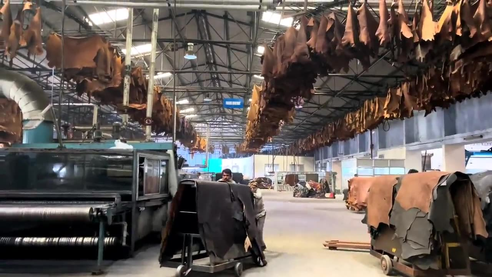
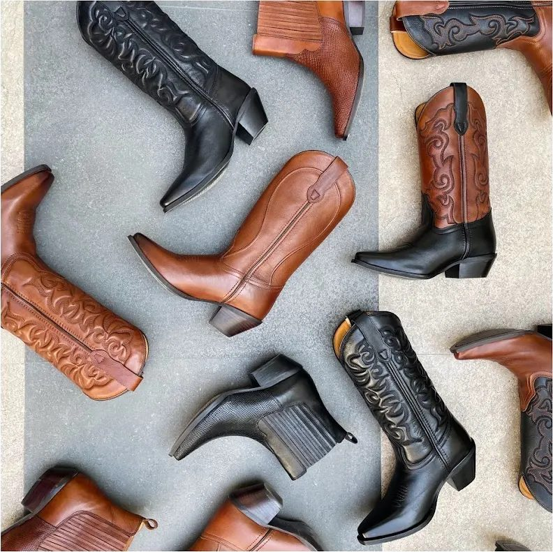
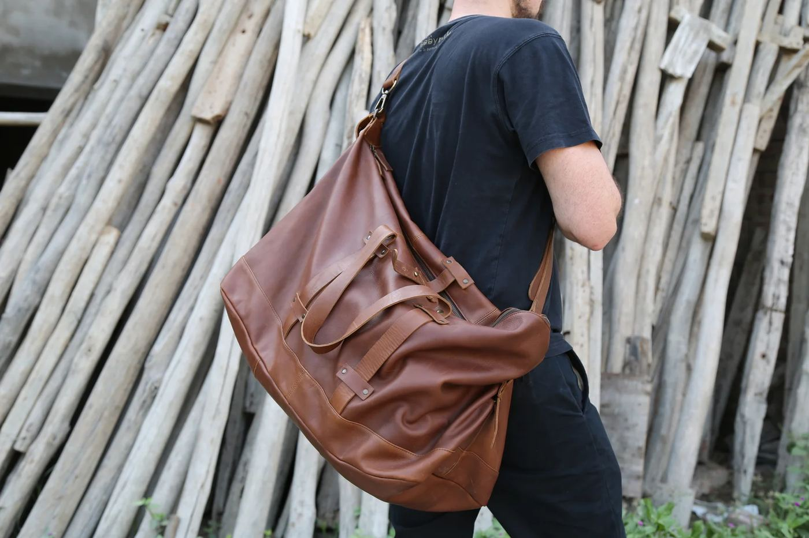
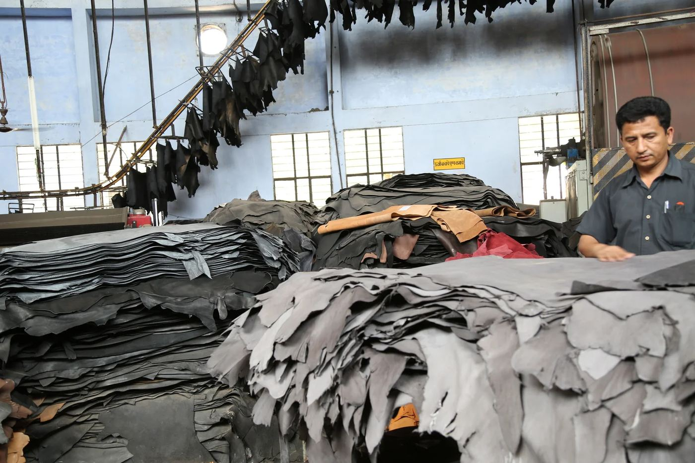
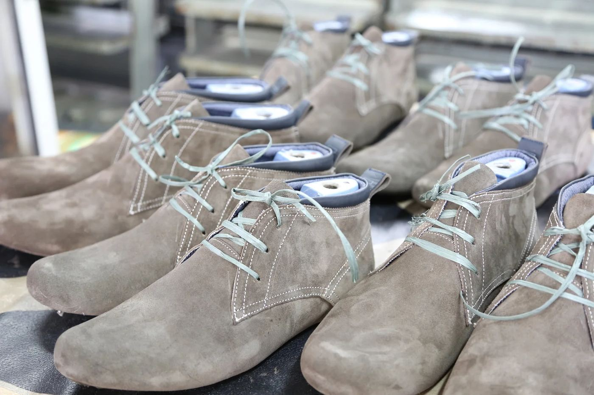
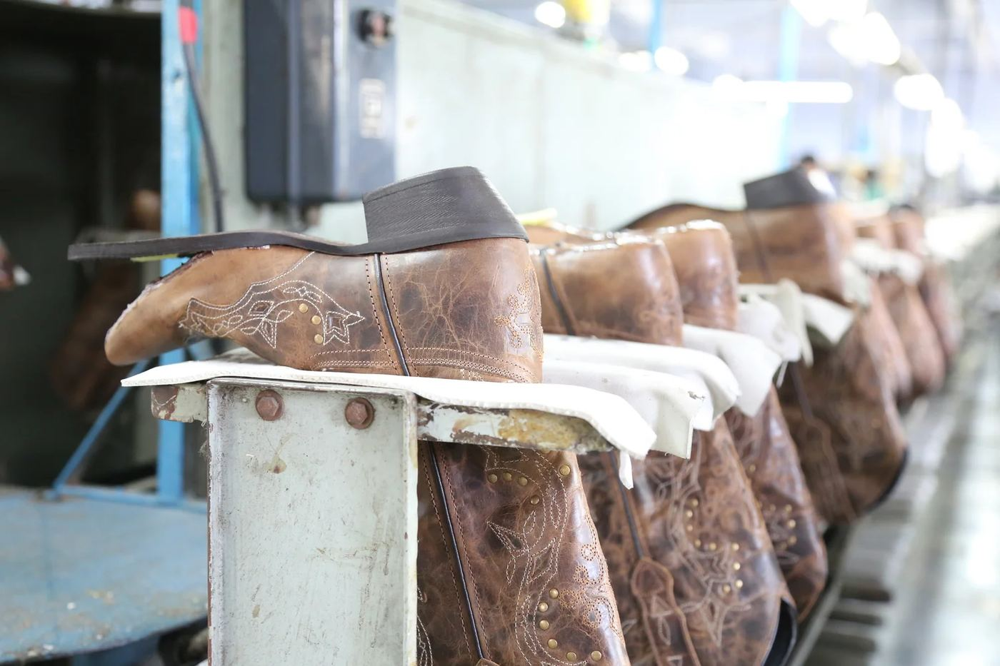
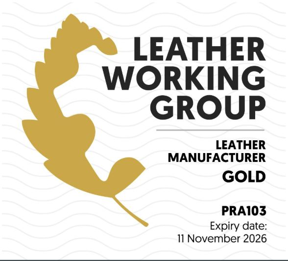
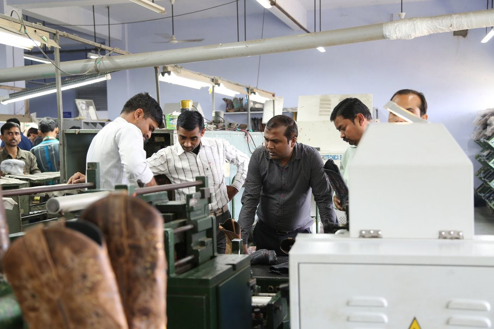

From raw hide to finished boot, under one roof.
We tan our own leather and turn it into footwear, bags and accessories for brands in Europe, the US, the UK and Australia. Since 1991.
Three lines, one source of leather.

Finished leather
Over 125 leathers, from oily pull-ups and crazy horse to nappa, nubuck and box calf.
See the tannery →
Footwear
Cowboy boots are our specialty. We also make fashion boots and shoes for brands in the US, UK and Europe.
See footwear →
Bags & accessories
Messenger bags, duffels, dopp kits, clutches and aprons, cut from our own leathers.
See bags →Every step happens in our factory.
Because we tan the leather ourselves, we control its colour, feel and thickness before it reaches the cutting table.
- Tanning

Hides from Argentina, the US and Europe, tanned and checked batch by batch.
- Cutting

Leather die-cut into components for each style.
- Stitching

Uppers and embroidery stitched on our own floor.
- Lasting

Uppers shaped over the last and soled.
- Finishing

Polished, checked and packed for shipping.
Audited for the environment and the people who work here.
Our tannery is rated Gold by the Leather Working Group, and our quality system is certified to ISO 9001:2015.

LWG Gold
Leather manufacturer audit PRA103
ISO 9001:2015
Quality management

Made-to-order collections for brands worldwide.
We develop and produce private-label collections for brands, from first sample to bulk shipment.
We wear what we make.
Our family also runs two direct-to-customer brands, made in our own tannery and factory. Designs we make for clients stay confidential and are never used for our own labels.